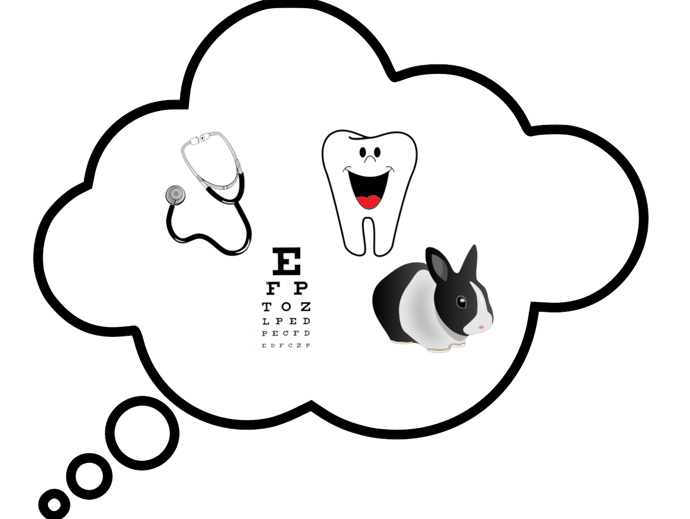

Talking Vets
Why I’m a vet .. and why you could be too
Home Doctors / Health Care Professionals / Dentists / Vets Contacts

Extras:
Specialist training
Getting work experience
Support for the selection process:
Writing your personal statement
Final year medical students answer your questions
Students vets answer your questions